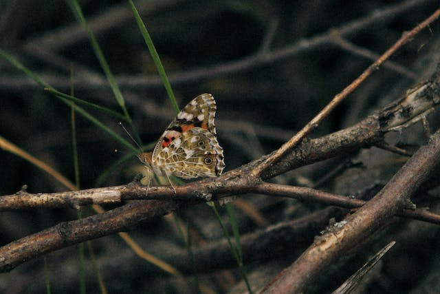

Butterflies (and moths) are the only group of insects that have scales covering their wings, although some butterflies have reduced scales. They differ from other insects also by their ability to coil up their proboscis. Immatures. Caterpillars are the names given to the larvae of both butterflies and moths.
